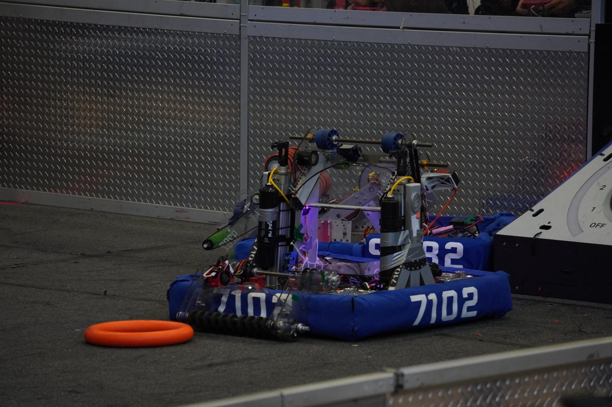
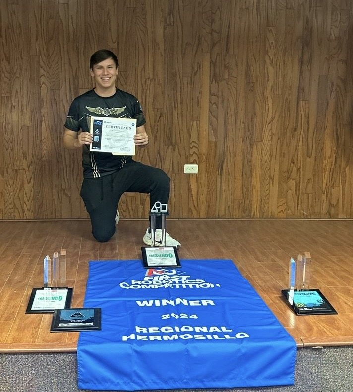
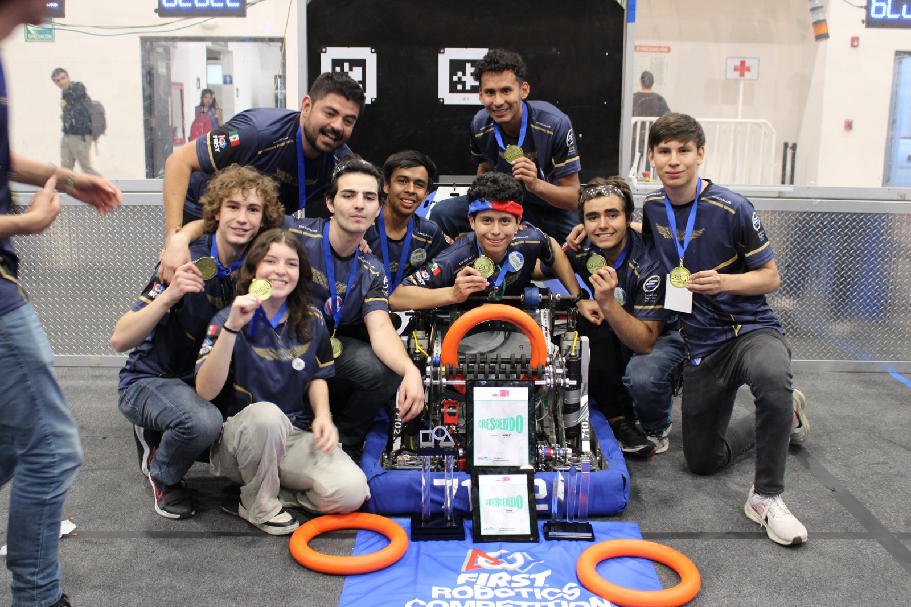
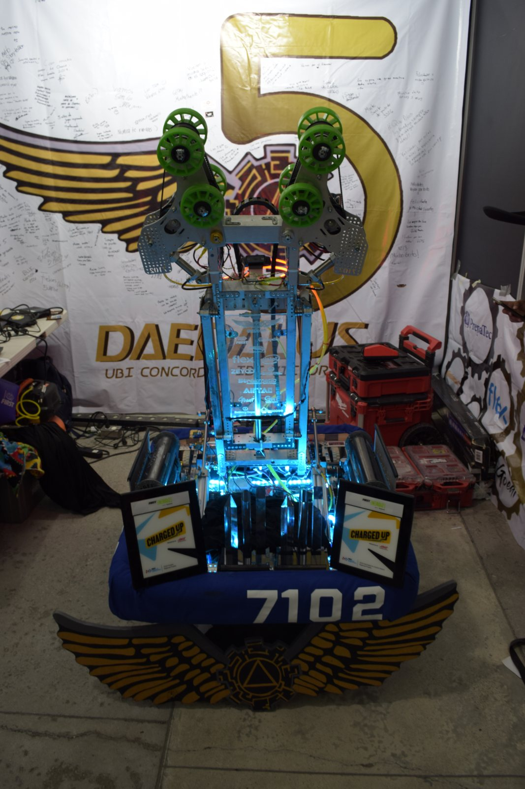

FRC Daedalus 7102
FIRST Robotics Competition es una competencia internacional en la que cada equipo diseña y construye un robot industrial en pocas semanas. Como capitán de Daedalus 7102 llevamos el robot del concepto al campeonato nacional y al Mundial.
FIRST Robotics Competition is an international competition where each team designs and builds an industrial-size robot in a few weeks. As captain of Daedalus 7102, I led the robot from concept to the national title and the World Championship.

img/frc-daedalus.jpgEl retoThe challenge
Diseñar, construir y poner a punto un robot competitivo en una temporada corta, coordinando a las áreas mecánica, eléctrica y de programación.
Design, build and tune a competitive robot in a short season while coordinating mechanical, electrical and programming sub-teams.
Lo que hiceWhat I did
- Lideré proyectos de ingeniería multidisciplinarios del concepto a la competencia.
- Coordiné el diseño mecánico y la integración de sistemas del robot.
- Led multidisciplinary engineering projects from concept to competition.
- Coordinated the robot's mechanical design and system integration.
ResultadosResults
- Campeones Nacionales FRC México 2025.
- Representantes de México en el Mundial de Houston, Texas.
- Mejor Robot Autónomo, Mejor Sistema de Control (2 veces) y 2º lugar Impact Award.
- 2025 FRC Mexico National Champions.
- Represented Mexico at the World Championship in Houston, Texas.
- Best Autonomous Robot, Best Control System (2×) and 2nd place Impact Award.
GaleríaGallery

img/frc-daedalus-1.jpg
img/frc-daedalus-2.jpg
img/frc-daedalus-3.jpg